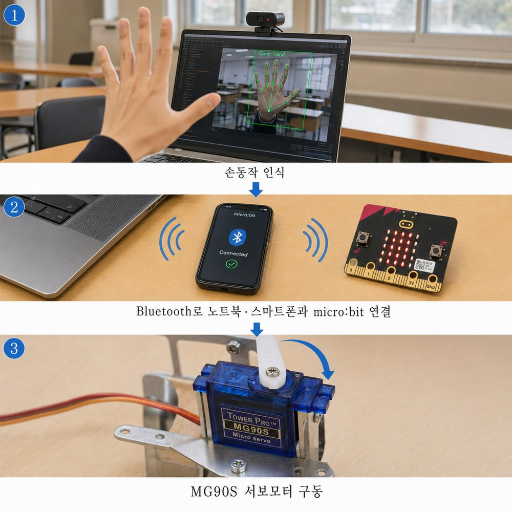

이 안에 무엇이
들어 있을까요?
들어 있을까요?
1
떠올리기
어떤 불편을 줄일지 정한다
2
만들기
골판지와 테이프로 거칠게 만든다
3
움직이기
AI와 서보를 연결해 돌려 본다
4
고치기
안 되는 곳을 찾아 바로 고친다
만들기 → 움직이기 → 고치기를 짧게, 여러 번
완성품보다 움직이는 첫 모형이 먼저입니다.
구분
들어오는 것
글·그림·소리·데이터
카메라·마이크·거리·움직임
하는 일
만들기·분류·예측
알아보기·판단·제어
나오는 것
화면 속 정보
움직임·회전·빛·소리
틀리면
엉뚱한 답이 나온다
기계가 엉뚱하게 움직인다
틀리면 실제 장치가 잘못 움직여요. 그래서 피지컬 AI는 만들고, 움직이고, 고치기를 되풀이합니다.
참고: 김홍순 선생님, 「Physical AI와 로봇 개발 교육」(런모어)
① 인식
바운더리엑스 웹앱
카메라로 보고, 결과를 ID1 같은 글자로 보낸다
블루투스ID1
② 판단
마이크로비트
‘데이터가 ID1이면 move 1’을 정한다
오늘 코딩하는 곳
각도명령
③ 움직임
180° 서보 2개
move 1은 P0, move 2는 P1 서보를 움직인다
④ 확인(피드백): 움직인 결과를 보고 다시 판단하고 고친다
왜 이렇게 나눌까요?마이크로비트는 AI 계산을 하기 어렵고, AI를 직접 돌리는 보드는 비싸요. 그래서 AI는 손에 있는 기기(폰·태블릿·노트북)가 맡고, 마이크로비트는 판단과 움직임만 맡습니다.
1
문제 상황
누구의, 어떤 불편?
2
도구 조건
네 가지로만
3지금 여기
도구 익히기
서보 2개와 AI 3종
4
주제 잡기
아이디어 카드
5
만들기와 공유
첫 모형, 고치기, 나누기
7~8차시 · 14:00~15:50 · AI 모델 훈련과 활용①~③ 도구 익히기, 끝에 ④의 씨앗 한 장
9~10차시 · 16:00~17:50 · 문제 해결④~⑤ 첫 모형을 만들고 나누기
지금 익히는 것은 전부 잠시 뒤 내 작품에 들어갈 부품입니다.
① 인식 · 바꿔 끼우기
이미지분류 웹앱
손 모양 대신 물체를 보고 ID1·ID2를 보낸다
블루투스ID1
② 판단 · 그대로
마이크로비트
7차시 기본 코드, 다시 보내지 않는다
각도명령
③ 움직임 · 그대로
180° 서보 2개
move 1은 P0, move 2는 P1
판단하고 움직이는 부분을 한 번 만들어 두면, 보는 눈은 바꿔 끼울 수 있습니다.
웹앱이 바뀌면 블루투스만 다시 연결합니다.
① 보는 눈
AI 웹앱 3종
핸드포즈 · 이미지분류 · 모션인식
블루투스
② 판단
마이크로비트
기본 코드 · 모션 예제 코드
각도
③ 움직임
180° 서보 2개
P0와 P1
보낼 때움직일 때
보낼 땐 끄고, 움직일 땐 켠다
9~10차시에도 그대로입니다.
8차시 마무리


9~10차시로 가져갈 것
장비
장치 이름표가 붙은 마이크로비트·링비트·서보 2개
아이디어 카드
문장 틀로 쓴 아이디어 한 장
9~10차시 「링비트와 AI모델을 활용한 문제해결 작품 제작 및 수업 적용」 16:00~17:50
오늘 만든 코드는 MakeCode에 저장해 두세요 · 10분 쉬고 뵙겠습니다